ActD Terminer une note
UMLActivity
Untitled
::
Note
::
Activity Diagram
::
ActD Terminer une note
Description
none
Diagrams

ActD Terminer une note
Groups
Utilisateur
Interface
BDD
Nodes
InitialNode1
Terminer une note
requête de MàJ du status de la note
Exécuter la requête
Vérifier le retour BDD
DecisionNode1
Message SQL
Edges
(InitialNode1→Terminer une note)
(Terminer une note→requête de MàJ du status de la note)
(requête de MàJ du status de la note→Exécuter la requête)
(Exécuter la requête→Vérifier le retour BDD)
(Vérifier le retour BDD→DecisionNode1)
CATCH (DecisionNode1→Message SQL)
TRY (DecisionNode1→Message "Note terminer")
Properties
Name
Value
name
ActD Terminer une note
stereotype
null
visibility
public
isReentrant
true
isReadOnly
false
isSingleExecution
false
Owned Elements
ActD Terminer une note